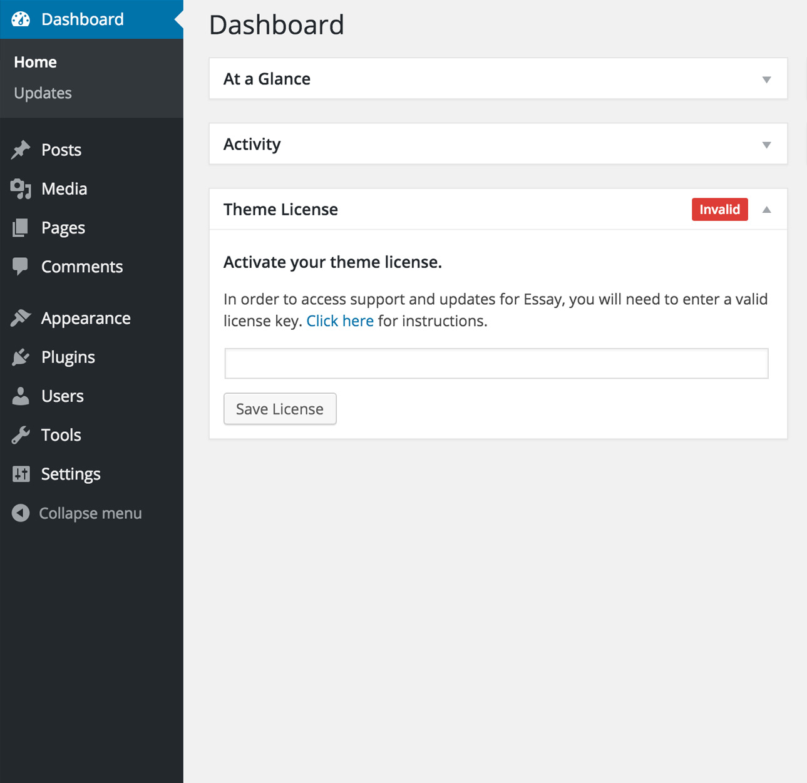

This document covers the installation, set up, and use of this theme, and provides answers and solutions to common problems. We encourage you to first read this document thoroughly if you are experiencing any difficulties before contacting our support team.
@@name
This help guide also covers features that are only available in the Pro Version of @@name. If you're interested in upgrading to pro, click here to learn more about the new features or go ahead and purchase @@name for only $59.
@@name has many more customization options including typographic selectors, stylistic color pickers and other add-ons. And in addition to these fantastic features, you'll also receive dashboard one-click updates and access to world-class theme support by our team of in-house professional WordPress developers.
Please note that support is only offered for @@name. If you already have a Pro license and have any questions that are beyond the scope of this document, feel free to ask us via our dedicated help center.
WordPress Upload
To upload through your Dashboard, select “Appearance” and then “Themes”. Next, select the “Install Themes” tab at the top of the page and then select the “Upload” link, right above the search field. Choose your file and select “Install Now”. Once the theme is fully uploaded and installed, click “Activate” to activate the WordPress theme.
The theme files will be stored on your server in the wp-content/themes location.
When uploading your theme with the installer, please ensure you are uploading the theme .zip file, not the entire package you downloaded. In this case, you will be uploading @@slug.zip.
FTP Upload
To manually upload your new WordPress theme, login with your credentials to your website and locate the wp-content folder in your WordPress install files. Upload the un-zipped @@name folder into the: wp-content/themes folder.
Once uploaded, activate the theme by heading to the “Themes” menu in the WordPress Dashboard. Locate the @@name theme and hit “Activate”.
Customizer Options Import
Located inside the /customizer folder within the package contents, you'll find a @@slug-export.dat file. This file contains the live demo's Theme Customizer options.
To import, first install and activate the Customizer Export/Import WordPress plugin, which is available as a free download. After you're successfully running the plugin, head to your Theme Customizer and look for the Export/Import section.
Import the @@slug-export.dat file with the uploader within that section and hit "Import".
Find out more on installing and activating plugins.
Premium Theme Setup
If you're looking for WordPress theme installation and setup to look exactly like the live theme demo - then we're here to help. Fast & simple for only $89.
Get the advanced Theme Setup service →
Our in-house team of professional developers will install the theme, upload the demo XML file, and setup your website exactly like the live demo. Frustration free. Complete your purchase of the Theme Setup service by clicking the link above and send us your deliverables.
Deliverables:
- Domain name
- FTP information
- WordPress admin credentials
- Theme files or ThemeForest item purchase code
Theme Support
If you have a problem with the theme or found a bug, please let us know via our official Help Center. We take pride in our customer support and we will do what we can to assist you. If you are experiencing a theme issue, please first turn off all third party plugins to see if the problem persists.
Please note that support is only offered for @@name. If you already have a Pro license and have any questions that are beyond the scope of this document, feel free to ask us via our dedicated help center.
It is rather important to set your theme menu in the WordPress Dashboard. To do this, locate the Menu options by selecting the “Appearance” tab from the dashboard sidebar and then “Menus”.
Once you’re viewing the Menus, create a new menu and save it. After you’ve saved the menu, you can add it to a menu via the Menu Settings, below the Menu Structure area. Add your pages and links to the menu you just created in the Menu Structure area.
Footer Menu
Add a footer menu to your webite simply by creating a menu and assigning it to the Footer Menu location - as described above.
Social Menu
The Social Menu is populated in both the site footer and sidebar elements of the theme. The social icons added to your menu will automatically populate in the site footer. To add the icons, simply create a custom link to the social media location and @@name will do the rest.
To also display the inputted social icons in the sidebar, simply check the Navigational Social Icons checkbox within the Customizer > Settings > Header section.
The following social media icons are supported:
- 500px
- Bandsintown
- Behance
- CodePen
- Dribbble
- Dropbox
- Email
- Facebook
- Flickr
- Foursquare
- Github
- Google Play
- Google
- Houzz
- Instagram
- iTunes
- Linkedin
- Medium
- Meetup
- Pinterest
- Rdio
- Reddit
- RSS
- Smugmug
- Sound Cloud
- Spotify
- Squarespace
- Stumbleupon
- Tumblr
- Twitch
- Twitter
- Vevo
- Vimeo
- Vine
- Vsco
- Yelp
- Youtube
@@name has the following templates built into the theme and can be applied by creating and saving a page in WordPress.
Entry Header Animation
Below is an example of the animation code deployed on the @@name demo. Simply add this to the Entry Header textarea within the "Page Settings" metabox (located beneath the page editor). Modify the text and add <b> elements as needed.
Portfolio Plugin Installation
To install the Bean Portoflio plugin, head over to our website and simply download the free Bean Portfolio WordPress plugin.
Once you’ve successfully downloaded the zip file, head to your WordPress Dashboard and select Plugins > Add New > Upload. Add the zipped file in the field there and click Upload.
Upon a successful upload, you’ll be prompted to activate the plugin. You’ll then see a new Portfolio tab in your WordPress Dashboard Sidebar. Creating portfolio posts is done exactly the same as standard posts.
Creating your Portfolio Page
You need to first create a page using the Portfolio Template. This template will pull your published portfolio posts. The example below utilizes our WordPress theme, Mark - but it's the same process as @@name.
Featured Images
Upload a featured image - any size will work. The images will be automatically applied throughout all the neccessary templates and loops.
Grid Thumbnail Size
Within the Portfolio Settings metabox, you may set the grid size for your portfolio project's featured image - that's used on the portfolio templates. There are four options: small, medium, large and xtra-large.
Gallery Images
This is where you will add your images to the post by clicking the "Browse & Upload" button. You have the capability to rearrange, caption, add more and remove images from the popup modal that appears.
Just remember to hit Save Gallery and you're all set.
Portfolio Captions
You may add captions to your portfolio gallery image uploads within the Edit Gallery modal (the same modal where you orignially uploaded images to your portfolio post). Just add your caption to the "Caption this image" text box directly below each image, and your caption will appear on the portfolio post.
Portfolio Post Formats
@@name is capable of outputting gallery and video portfolio posts (embedded - e.g. Vimeo & YouTube). To change the type of portfolio to display, click on the checkboxes under the "Portfolio Format" metabox, located beneath the Portfolio Categories, on the right hand side of your window.
Mix or match video and gallery posts on the same post.

Portfolio Meta
Each portfolio post has selectable meta options that you may choose to use on each individual post. You can set the date, client, role, url, elect to display the categories, tags, views and the portfolio post title.
You can also add an external URL to which your post loop will link to a different URL than it's single post page. For example, you can create a post with a featured image and an external link to your Behance project page - then promote that project within the portfolio templates.
Portfolio Options
Located within the Theme Customizer you will find a Portfolio section. Here you may elect to enable the singular portfolio loop, portfolio sorting, lazy-loading, photoswipe and enter your portfolio count.
To access the live Customizer, you may select the Customize button in the admin bar dropdown or select "Customize" from the Dashboard menu. Note that you must be logged in as a site administrator in order to access the controls.
Theme Options
1. Title
Set your site title, tagline, logo and the site icon. You can also elect to retina-fy your logo.
2. Header
Turn off/on the sidebar flyout as well as the social navigational icons in the flyout. Also modify these colors: site title, site title hover, navigation icon, navigation icon hover and social icons.
3. Portfolio
Decide if you'd like the gallery lazy loading active and the Photoswipe lightbox on. Enable the "Next" portfolio navigation feature. Lastly, enter the number of posts you'd like displayed originally on your portfolio template. Regarding colors, you may modify the overlay and overlay text colors.
4. Contact
Set your contact form email address and customize the form submit button.
5. Footer
Turn on/off the "Powered by @@name". Enable the Footer Call to Action and all relevant options. There's also all footer styling options to select the text color, link hover color, and social icons color.
Customizer Styles & Fonts
1. Colors
Easily manipulate the theme accent color and other elements throughout the theme with the color picker in this tab.
2. CSS3 Filter
Within the Portfolio section of the Customizer, you'll find a select field to set an optional CSS3 Filter value (Black & White and Sepia). If activated, your portfolio items will default with the selected filter active.
3. Typography
Easily modify the fonts throughout the theme - choosing from the entire Google fonts library.
To install any of our free plugins, head over to our website and simply download the plugin files. Once you’ve successfully downloaded a zip file, head to your WordPress Dashboard and select “Plugins > Add New > Upload.”
Add the zipped file in the field there and click “Upload.” Upon a successful upload, you’ll be prompted to activate the plugin.
ThemeBeans Plugins
@@name is compatible with many of our custom developed WordPress Plugins. Head over to our website and download our free plugins now →
- Bean Portfolio - required plugin
- Bean Shortcodes
- Bean Tweets
- Bean Instagram
- Bean Social
- Bean 500px
- Bean Dribbble
- Bean Pricing Tables
- Bean Registry
Each graphical asset has an associated retina image that should be modified when customizing assets in this theme. You will find these retina assets in their respective image locations.
Additionally, if the image size has changed, the background-size property of the associated class in /style.css must be modified to reflect those changes. You can find this in the Retina CSS section at the very bottom of the main stylesheet.
Retina Logo
Easily retina-fy your logo simply by selecting the "Enable retina logo" checkbox within the Site Title Customizer panel. When this option is checked, your logo will load 50% of it's orignial width, so ensure that you upload a logo twice the size that you'd like presented.
If you've requested and entered your theme license key, then you'll automatically be notified of any theme updates as we push them. This is the most effective method for getting updates pushed to you quickly and effienctly. Read more about theme licenses.
Check for Updates
To check your theme version, click the live changelog link below and check the version number at the top of the changelog.txt file:
View the @@name theme changelog →
Relay the changelog version at the top of that changelog.txt file with the version in your WordPress Dashboard > Appearance > Themes section to see if your theme files are up to date.
If you are in need of the update, download the current build from the location you purchased the theme from (either ThemeForest, Creative Market or via your account dashboard) to install the updated theme.
If you have an active license key applied to your theme, you will receive live update notifications to which allows one-click updates directly from your WordPress dashboard.
FTP Updating
If you have not customized the original theme files then you may simply drop the updated theme folder contents into the theme folder on your server – which is located in wp-content/themes/@@slug.
If you wish to upload the entire updated theme as a separate theme, ensure you:
- Rename the updated theme’s folder (different from the current theme)
- Drop the renamed theme folder into wp-content/themes
- Switch to the new theme via your WordPress Dashboard
If you choose to upload the whole theme and switch to it, you may lose your Theme Customizer data and will have to add those back in.
FTP Selective Updating
On the other hand, if you have customized some files in the core theme contents, you should consider selective updating, which simply means updating only the files that are pointed out in the theme’s changelog.
There are a couple programs out there that will allow you to compare versions of files, in order to catch customizations you may not remember. Some recommended programs are WinMerge (Windows), Kaleidoscope (OSX), and handy GitHub (OSX) & (Windows).
Recommended
Overall, the safest and cleanest way to update your theme is to leave your currently modified theme on your server/site as is, rename the folder of the newly updated theme, upload the new theme, and modify that to match your original custom work. In this way, if something has gone wrong with the new version, you’re just a few clicks away from getting things back to how they originally were.
Please note that ThemeBeans is not responsible for content loss, database errors and such, which may happen to your WordPress install upon an incorrectly applied theme update.
Once you've located your license key on your purchase receipt, you may enter the key on the "Theme License" dashboard widget, located on your WP Dashboard.
Once your license key is entered, hit the "Save License" button - then the "Activate" button that appears after the page refreshes. Upon a successful activation you’ll see a green “Active” tag next to the widget title.
Please note that licenses are only given for @@name - not the free version.

What is the license key for?
It is important to keep your license up to date in order to continue getting updates for your ThemeBeans WordPress theme and support for any issues you may encounter. Renewing your license grants you access to support and updates for six months, including all updates for bug fixes and feature introductions.
Without a valid theme license, you will be unable to get support and receive theme updates.
If your key is not applied after hitting the Activate button, simply re-enter the key and try again. Sometimes it takes a few tries to properly establish a connection with the activation server.
What if my license key has expired?
License keys may be renewed at a discount on our website. You will get a renewal notification in the license key dashboard widget if your license is about to expire, or has indeed expired.
A child theme is a theme that inherits the functionality and styling of another theme, called the parent theme. Child themes are the recommended way of modifying an existing theme.
Why use a Child Theme?
There are one main reason why you would want to use a child theme: If you modify a theme directly and it is updated, then your modifications WILL be lost. By using a child theme you will ensure that your modifications are preserved.
Installing the Child theme
Log in to your site's administration panel, and go to Administration Panels > Appearance > Themes. Click "Add New" and follow the directions to upload the @@slug-child.zip file, located in the @@slug-package/theme/ folder.
Next simply click "Activate" and both the @@name theme and @@name child theme will be active on your WordPress site. Now you're ready to customize away.
Note that this is the same exact method we referred to in the Getting Started section of this guide. You should see your child theme listed and ready for activation.
Customizing Template Files
If you want to change more than just the stylesheet, your child theme can override any file in the parent theme: simply include a file of the same name in the child theme directory, and it will override the equivalent file in the parent theme directory when your site loads.
For instance, if you want to change the PHP code for the site header, you can include a header.php in your child theme's directory, and that file will be used instead of the parent theme's header.php.
Child Theme Functions.php
Unlike style.css, the functions.php of a child theme does not override its counterpart from the parent. Instead, it is loaded in addition to the parent’s functions.php. (Specifically, it is loaded right before the parent’s file.)
In that way, the functions.php of a child theme provides a smart, trouble-free method of modifying the functionality of a parent theme.
Adding PHP Functions
Say that you want to add a PHP function to your theme. The fastest way would be to open the @@slug/functions.php file and put the function there... But that’s not smart: The next time @@name is updated, your function will disappear (as the entire contents of the /@@slug/ folder are replaced upon an update.
However, there is an alternative way which is the smart way: you can create a child theme, add a functions.php file in it, and add your function to that file. The function will do the exact same job from there too, with the advantage that it will not be affected by future updates of the parent theme.
DO NOT copy the full content of functions.php of the parent theme into functions.php in the child theme. It's not a good practice by any means.
Modifiying PHP Functions
You can use this same exact methodology to modify functions that are within the parent theme's files. Let's take a quick look at an example.
Below is an example of a typical function within most of our WordPress themes - a template tag that pulls in the site archives.
Say you wanted to change the titles of each section (Monthly, Yearly, Categories). You would find this function (located in the @@slug/inc/template-tags.php file) then copy it over to the child theme like such:
And then edit the text as you see fit. This function will load before the one in the theme, which is pluggable —that is, replaceable by a child theme— conditionally.
Note that this example is for this specifcic function, buy you can do the same with any pluggable function that contains the following:
To learn more, read the this article on the WordPress Codex →
If you'd like to add another menu location to use in the theme, search for the @@slug_setup function in your theme's functions.php file and copy that whole function to your child theme.
Within the @@slug_setup function you'll see the standard register_nav_menus function. Simply create another copy/paste another line with a unique location identifiers and name. The code below creates two separate menus locations that are selectable via the WP Dashboard > Appearance > Menu page.
Adding your menu to the theme.
Now that you've created the menu, you can use it in your theme's files. As always, we suggest utilizing a child theme to make file modifications.
The code below is an example of the wp_nav_menu function that displays your created navigation window. There is quite a few parameters associated with this function, so take a look at it's official reference to see all that you can do.
Add Image Sizes
If you'd like to add another image size for your WordPress instance to automatically size for, search for the @@slug_setup function in your theme's functions.php file and copy that whole function to your child theme (if you have not already done so).
You'll want to look for add_image_size within the @@slug_setup function and copy/paste a new line in. Below is an example of the add_image_size function.
Note that the first numeral value is the image's width and the second is the height. Read more about the parameters of the add_image_size function on the WordPress reference site.
Using image_size in your theme.
It's pretty simple to utilize your new image size within your theme templates. Here's an example using the above add_image_size function.
Note that you will need to regenerate your images if you're trying to create an image size for images already uploaded to your WordPress Media Library.